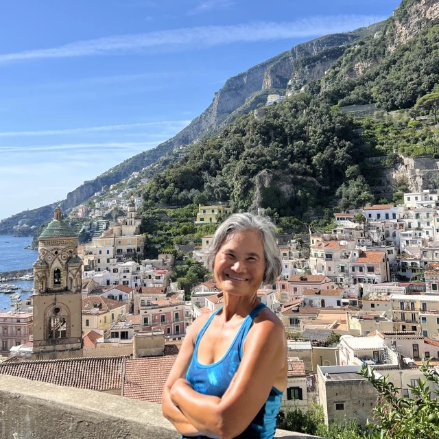
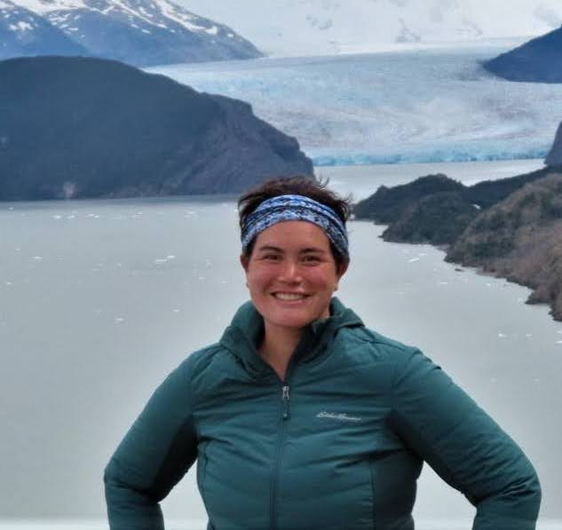

meimei.kirk@fora.travel

I’m a retired media exec who has been passionately exploring the world for the past decade and helping others find their way. I’ve been to 70-plus countries and all seven continents, having fallen in love with Antarctica in 2024. My favorite place? Africa, where I’ll return for my 7th time in December.
At 65, my adventurous spirit is stronger than ever. But I like my luxuries, too, thank you. My personal expertise, discerning scrutiny, and tireless research produce show-stopping experiences that are unforgettable. I'd love to help make your bucket list dreams come true!
regan.kirk@fora.travel

I am an English professor and TaeKwonDo instructor near Orlando, Florida; in my past life, I was a corporate lawyer in New York City. I have a B.A. from the University of Washington in English and economics, a J.D. from Yale University, and an M.F.A. in creative writing from Columbia University. I also design custom iPhone and Android apps and have a professional coding certification from MITxEmeritus.
I travel often, constantly seeking out beautiful locales and outdoor adventures. (This picture is from the four-day W Trek in Torres Del Paine National Park in Chile.) I am an avid writer, with several novels and one musical in my repertoire, and when I was seven years old I won a national contest to invent and publish a board game. In the past, I've moonlit occasionally as a pianist at a local establishment. Two adorable goldendoodles always keep me on my toes!